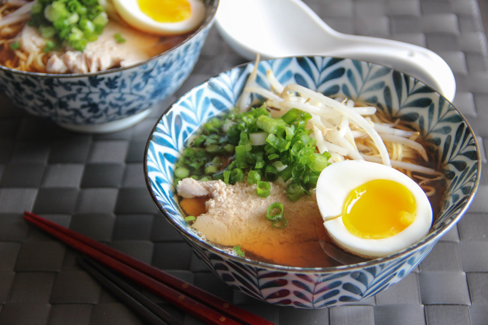
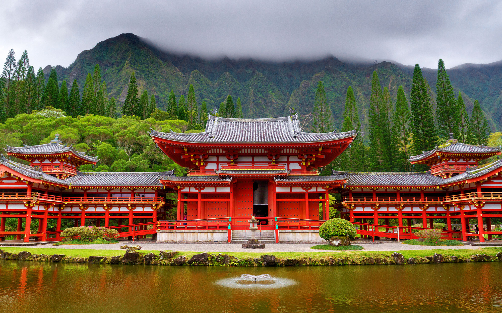

Japan

Food
The traditional cuisine of Japan (Japanese: washoku) is based on rice with miso soup and other dishes; there is an emphasis on seasonal ingredients. Side dishes often consist of fish, pickled vegetables, and vegetables cooked in broth. Seafood is common, often grilled, but also served raw as sashimi or in sushi.


Culture & Tradition
Japanese culture is intertwined with sport, whether it be kendo and kyudo, originally developed for hunting and combat, judo, a combat sport with the philosophical aim of perfecting one's character or the must see cultural sport experience, sumo, the ancient Shinto ritual that has represented Japan as a national sport.
The following represent some of Japan's most popular traditions.
Bonenkai Parties. Bonenkai are Japanese office parties held in December.
Fukusasa Lucky Bamboo Branches.
Zabuton Throwing.
Yamayaki Mountain Burning.
Mamemaki Bean Throwing.
Mochi Making.
Ehomaki Sushi Rolls.
KFC On Christmas Eve.
Mount Fuji
Japan’s Mt. Fuji is an active volcano about 100 kilometers southwest of Tokyo. Commonly called “Fuji-san,” it’s the country’s tallest peak, at 3,776 meters. A pilgrimage site for centuries, it’s considered one of Japan’s 3 sacred mountains, and summit hikes remain a popular activity. Its iconic profile is the subject of numerous works of art, notably Edo Period prints by Hokusai and Hiroshige.

Tokyo
Tokyo, Japan’s busy capital, mixes the ultramodern and the traditional, from neon-lit skyscrapers to historic temples. The opulent Meiji Shinto Shrine is known for its towering gate and surrounding woods. The Imperial Palace sits amid large public gardens. The city's many museums offer exhibits ranging from classical art (in the Tokyo National Museum) to a reconstructed kabuki theater (in the Edo-Tokyo Museum.

Karate
Karate is a type of Japanese martial art, which originated in Okinawa. The word karate in Japanese means 'empty hand'. It's said that karate was influenced by Fujian White Crane, a form of kung fu originating in Southern China. In karate, the only weapons allowed are one's hands and feet.

Temples
Temples are built to serve the Buddhist religious tradition and are characterized by a sanmon gate at the entrance. Large sanmon gates at temples like the Todaiji Temple in Nara or the Sensoji Temple in Tokyo have impressive roofs and fierce temple guardian statues known as niozo in their columns.

Olympics!
The Olympic Games are an international sports festival, held every four years. ... Summer Games and Winter Games are held separately. In 2012, the commemorative XXX Olympic Games were held in London, with athletes from 204 countries and regions participating in 26 sports, with a total of 302 separate events.